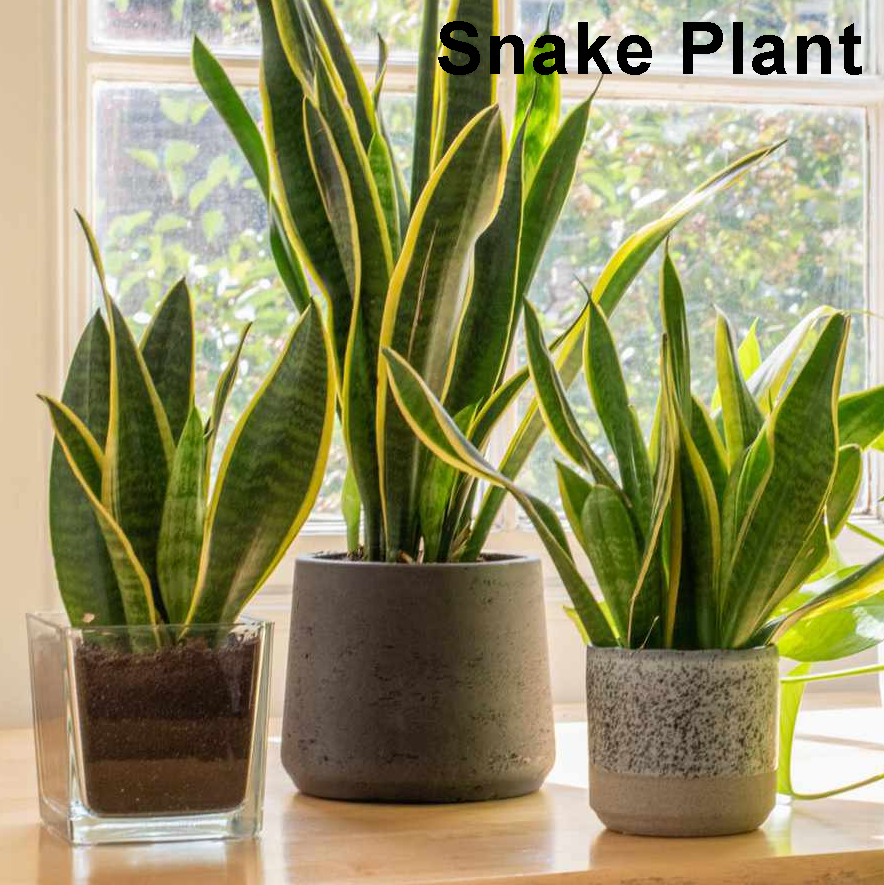

Dracaena trifasciata
The Dracaena trifasciata or more common know the snake plant is native of west Africa from Nigeria to the Congo. This plant have many names "mother-in-law's tongue," Saint George's sword" or snake plant because the sharp leaves resemble snakes.
Snake Plants represent tranquility and calmness and also can bring positive energies and luck.
Here some tips to keep you plant healthy and beautiful:
Tip: